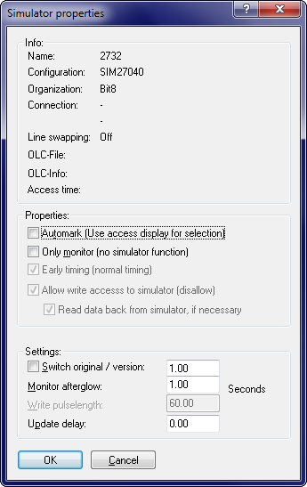

|
The dialog Simulator / Properties (Menu Hardware) |

  
|
|
The dialog Simulator / Properties (Menu Hardware) |
|

The upper block contains information about the currently selected producer hardware.
If the checkbox ‘Automark’ is activated and the engine is running, then any accessed cells are automatically used as a selection for any operation (for example for + and -).
The checkbox ‘Only monitor’ disables the simulator and lets WinOLS only monitor the engine.
The make the development of vehicles which perform checksum tests at startup time easier, you may select the option ‘Switch original / version’ which automatically switches from the original to the changed version after a defined time. This option must not be confused with the option ‘Original and version in one eprom’ in the producer dialog, which needs an eprom of twice the normal size and a switching module like the KEY520.
While monitoring every memory access is marked on the screen (by default in red). Use the afterglow field to configure the number of seconds the marking shall last.
Use ‘Write pulselength’ to configure the simulator timinig. If the value is too small, the data might not reach the simulator memory. If the value is to large, the simulator might crash when performing online-changes of the eprom contents.
The ‘Update delay’ is the time WinOLS will wait after any changes until the changes are written to the simulator memory.
Note:
Since program version 1.030 it is no longer necessary to enter the connection code. It will be automatically be recognised now.
Shortcuts
| Symbol bar: | - |
| Keyboard: | - |